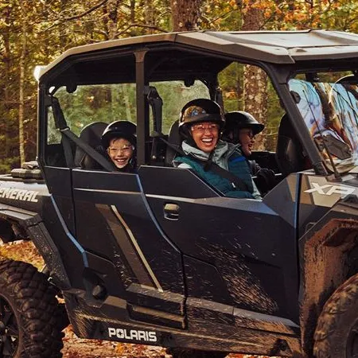

Explore and enjoy your vacations easily
Jet around in style with affordable car rentals.
Your adventures awaits!
Explore Cozumel with Scoots Car Rental
Discover the beauty of Cozumel, Quintana Roo, Mexico with Scoots car rental. Whether you're looking for a compact car for city exploration or a spacious SUV for island adventures, we have the perfect vehicle for your needs. Enjoy the freedom to explore at your own pace with Scoots.

Our services
24/7 Customer support
Choose from daily, weekly or monthly rental plans to suit your needs.
Flexible Rental Options
Choose from daily, weekly or monthly rental plans to suit your needs.
Wide Vehicule Selection
Select from a range of vehicules to find the perfect match for your trip.
Easy Online Booking
Effortless reservation process through our user-friendly website.
jfdsfasdf
Scooters
Zip through the vibrant streets and explore hidden gems with our sleek Honda scooters. Perfect for solo adventurers or couples, these scooters are your ticket to an intimate island experience.

ATVs
Grab your friends or family and hop into one of our robust ATVs. Whether it's a jungle adventure or a beachside escape, our ATVs promise a thrilling ride across Cozumel's diverse landscapes.
Jeeps
Embrace the rugged beauty of the islan in a classic Jeep. With the power to conquer any terrain, our Jeeps are ideal for those who seek the ultimate adventure and comfort.

Location
About Us
Welcome to Scoots, your premier car rental service in Cozumel, Quintana Roo, Mexico. We pride ourselves on providing top-notch vehicles and exceptional customer service to ensure your travel experience is smooth and enjoyable.
With a wide range of cars to choose from and convenient rental options, Scoots is the perfect choice for all your transportation needs in Cozumel. Trust us to make your journey unforgettable.